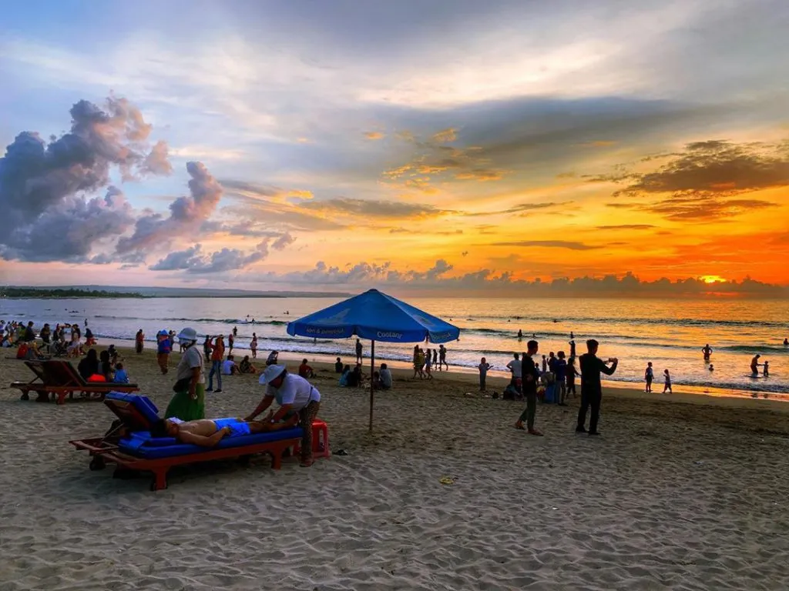

Welcome !
Situs Ini akan membawa anda melihat beberapa pantai terindah di Indonesia !

Situs Ini akan membawa anda melihat beberapa pantai terindah di Indonesia !
Pantai Nihiwatu Sumba merupakan salah satu pantai yang bertujuan untuk membuat para pengunjung agar bisa berselancar dengan menyenangkan layaknya seperti peselancar yang berkelas dunia. Hal ini dikarenakan, ombak yang ada di pantai tersebut cukup gansa sehingga anda akan terlihat orang yang profesional jika berselancar disana.
Bahkan, ada banyak para peselancar yang menjuluki kalau pantai yang satu ini dinamakan sebagai God's Left. Pantai ini cukup populer, karena ada banyak juga para wisatawan yang ada di mancanegara pernah mengunjungi tempat ini. Jadi, tak heran kalau tempat ini menjadi salah satu pantai yang direkomendasi untuk para peselancar.
Yang membuat pantai ini menjadi populer adalah, pemandangan yang indah darinya bisa mengalahkan panorama yang terkenal dari Hawaii, yakni Hanalei Bay. Sebagai tambahan, pemilik dari resort ini adalah orang asing, tetapi karyawan yang ada diresort ini adalah orang Indonesia.
Bagaimana cara pergi ke sana? Apa yang harus dilakukan agar bisa sampai dengan cepat di pantai Nihiwatu Sumba?.. Pasti anda akan bertanya dengan hal ini, apalagi anda sudah mengetahui hal-hal menarik dari pantai yang satu ini.
Nah, jika anda berminat untuk berpergian kesana, maka anda akan menjadi lebih mudah jika berangkat dari pulau Bali tepatnya pada bandara yang bernama Ngurah Rai dengan tujuan bandara Tambolaka.
Apabila anda sudah sampai di bandara tersebut, maka anda dapat menyewa sebuah mobil atau mungkin anda dapat menghubungi pihak dari resort. Dengan begitu, mereka akan menuntun anda hingga tiba di resort tersebut sehingga bisa menikmati keseruan dan keindahan akan pantai Nihiwatu Sumba.
Dimana lokasinya?.. Untuk lokasi yang dimiliki oleh pantai ini terletak pada arah kisaran 30 km dari sebuah kota yang bernama Waikabubak, Kabupaten Sumba Barat, Provinsi Nusa Tenggara Timur. Jika anda belum tahu map nya, maka cobalah untuk membuka Google Maps terlebih dahulu.
Ketika mendengar kata Bali, apa yang terlintas di benak Anda? Bagi banyak orang, jawabannya pastilah Pantai Kuta. Sebagai salah satu destinasi wisata paling ikonik dan terkenal di Pulau Dewata, Pantai Kuta menawarkan kombinasi sempurna antara hamparan pasir putih yang lembut, deburan ombak yang mempesona, serta matahari terbenam yang tak terlupakan. Bali, yang dikenal sebagai Pulau Dewata, telah lama menjadi sorotan dunia berkat keindahannya yang mempesona. Diantara sekian banyak destinasi di Bali, Pantai Kuta tampil sebagai ikon yang tak tergantikan. Bagi banyak orang, mencari ketenangan atau petualangan di Bali berarti menghabiskan waktu di tepi Pantai Kuta, menikmati setiap detik perjalanan dengan keindahan yang ditawarkan.
Pantai Kuta Bali terletak di bagian selatan Pulau Bali. Terletak di jarak 1,5 km dari Bandara Internasional I Gusti Ngurah Rai, Pantai Kuta memiliki pantai sepanjang kurang lebih 1.500 meter. Dulunya, Pantai Kuta dan Kuta adalah desa nelayan yang keberadaannya sangat sepi. Selain itu, Pantai Kuta juga digunakan sebagai pelabuhan komersial dan maritim oleh kerajaan Bali. Sekarang telah berubah menjadi kota kecil internasional yang dilengkapi dengan fasilitas dan infrastruktur pendukung pariwisata.
Pantai berpasir putih sepanjang sekitar 4 km sangat disukai oleh wisatawan untuk berjemur, menikmati matahari terbenam dan berenang atau berselancar. Titik khusus dari pantai Kuta adalah habitat kura-kura yang ditemukan di sana. Dulunya Pantai Kuta adalah tempat hidup penyu, tetapi sekarang di ambang kepunahan, maka ada pemeliharaan penyu di Kuta. Hewan ini dilindungi oleh undang-undang pemerintah dan hukum internasional oleh World Conservation Union (IUCN). Jika beruntung Anda bisa melihat aktivitas bayi penyu melepaskan atau menetas ke laut.

Indonesia adalah negara kepulauan yang kaya akan keindahan alam. Salah satu destinasi yang menarik untuk dikunjungi adalah Tanjung Bira, sebuah tempat yang memikat di ujung selatan Sulawesi. Terkenal dengan pantainya yang indah dan pasir putihnya yang lembut, wisata Tanjung Bira menawarkan pengalaman liburan yang tak terlupakan bagi para wisatawan.
Berlokasi di Kabupaten Bulukumba, Provinsi Sulawesi Selatan, Tanjung Bira terkenal sebagai surga pantai dengan air laut jernih dan pemandangan alam menakjubkan. Salah satu daya tarik utamanya adalah pantainya yang berpasir putih halus sepanjang 4 kilometer. Pantai ini juga dikelilingi perbukitan hijau yang menambah keindahan panorama alamnya.
Tanjung Bira menawarkan berbagai kegiatan dan atraksi bagi para pengunjungnya. Salah satu kegiatan paling populer adalah menyelam atau snorkeling. Dengan air laut jernih dan keanekaragaman hayati bawah laut yang kaya, pengunjung dapat menjelajahi keindahan terumbu karang dan kehidupan laut yang menakjubkan.
Tidak hanya pantai, Tanjung Bira juga memiliki objek wisata lain yang menarik untuk dikunjungi. Salah satunya adalah Pulau Liukang Loe, sebuah pulau kecil yang terletak tidak jauh dari pantai. Pulau ini menawarkan keindahan alam yang memesona, terutama pemandangan terumbu karang yang cantik dan air laut yang jernih. Pengunjung dapat melakukan perjalanan singkat ke pulau ini dengan perahu atau menyewa perahu nelayan untuk menikmati pesona alam bawah lautnya.
Selain itu, wisatawan juga dapat mengunjungi Desa Selayar, sebuah desa nelayan yang terletak di sekitar Tanjung Bira. Di desa ini, pengunjung dapat melihat kehidupan sehari-hari masyarakat nelayan dan belajar tentang kebudayaan mereka. Desa Selayar juga terkenal dengan pembuatan perahu tradisional, yang merupakan kegiatan utama masyarakat setempat.
Seperti namanya, pantai eksotis dan indah ini memiliki pasir berwarna merah muda. Pink Beach atau yang dikenal Pantai Merah di Pulau Komodo, menjadi satu dari tujuh pantai berpasir merah mudah di dunia.
Wisatawan akan dimanjakan dengan beragam jenis ikan, batu karang, dan biota laut lainnya. Tak heran jika aktivitas snorkeling menjadi yang paling populer dan favorit di Pink Beach.
Rute terbaik menuju Taman Nasional Komodo adalah melalui Bali. Dari Bandara Ngurah Rai Bali, traveler harus melakukan penerbangan menuju Bandara Labuan Bajo, yang merupakan pintu masuk ke Pulau Komodo.
Setelah sampai di Labuan Bajo, traveler akan melanjutkan perjalanan laut menuju Pulau Komodo. Traveler bisa langsung menuju pelabuhan di Pink Beach. Atau memilih berlabuh di sisi pulau, kemudian berjalan kaki selama kurang lebih empat jam untuk menuju pantai.